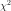
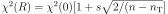
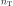
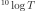
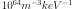

6.1.2.2. Model related commands¶
A SPEX model is organised in sectors and components. Sectors are groups of components that model a particular source of radiation. Below, the basic commands for building the model and change its parameters are listed.
6.1.2.2.1. Abundance¶
The solar abundance table used is set in SPEX using the abundance command. In PYSPEX, this
is abbreviated to abun. The desired abundance table should be loaded by providing the
abbreviation for the table (abunset):
- Session.abun(abunset)[source]¶
Set the abundance table in SPEX. The abunset parameter is one of ‘reset’, ‘ag’, ‘allen’, ‘asplund’, ‘ra’, ‘grevesse’, ‘gs’, ‘lodders’, and ‘solar’.
- Parameters:
abunset (str) – String representing the abundance set used in SPEX.
- Returns:
Object containing the abundance class.
- Return type:
The possible abundance tables are:
reset: Lodders et al. (2009)allen: Allen (1973)ra: Ross & Aller (1976)grevesse: Grevesse et al. (1992)gs: Grevesse & Sauval (1998)lodders: Lodders proto-Solar (2003)solar: Lodders Solar Photospheric (2003)ag: Anders & Grevesse (1989)asplund: Asplund et al. (2009)
The abun command returns an object with the abundance information, which can optionally
be assigned to a parameter and be accessed through Python. See the advanced class descriptions
for details.
For example:
>>> a = s.abun('asplund')
>>> dir(a)
['__doc__', '__init__', '__module__', 'get', 'index', 'list', 'ref', 'set', 'update']
6.1.2.2.1.1. Abundance show¶
To show the current abundance table, use the abun_show method:
The method returns the reference as a text string:
>>> ab = s.abun_show()
Lodders et al. (2009)
>>> print(ab)
Lodders et al. (2009)
6.1.2.2.2. Aerror¶
Calculate the uncertainties for several parameters of a model component due to the uncertainties in the atomic data.
Example:
>>> aerr = s.aerror(1,1,'norm')
>>> aerr = s.aerror(1,1,'26',shell=1)
6.1.2.2.3. Calculate¶
Once the model sectors and components are set-up and the parameters are set, the model spectrum
can be calculated using the SPEX calculate command. For convenience, this command has been
abbreviated to calc in PYSPEX.
Example:
>>> s.calc()
6.1.2.2.4. Components¶
Spectral components, like power laws, thermal and absorption models are loaded using the
SPEX comp command. Since the command is often typed simply as com in practice, the
PYSPEX command is also com:
The command adds a component by default to sector 1. If the component should be added to a
different sector, then please use the optional isect parameter to specify the target sector.
For example:
>>> s.com('cie')
>>> s.com('po', isect=2)
See the SPEX reference manual for a list of spectral components.
6.1.2.2.4.1. Component delete¶
Deleting a component from the model is done using the sector and component number of the component.
For example:
>>> s.com_del(1,1)
The command above deletes the first component in sector number 1.
6.1.2.2.4.2. Component relate¶
The relation between the additive and multiplicative components is set with a com rel command
in SPEX. In PYSPEX this is:
The relations are set per component (so no ranges, unfortunately) and the related multiplicative models should be entered (in the right order) using a numpy array. For example:
>>> s.com('reds')
>>> s.com('hot')
>>> s.com('cie')
>>> s.com_rel(1, 3, numpy.array([1,2]))
6.1.2.2.5. Distance¶
To calculate fluxes and luminosities, SPEX needs an assumed distance of the source. In SPEX this
is done with the distance command. In PYSPEX this is abbreviated to dist for convenience.
The distance can be set with the dist command:
where isect is the sector number, dist the distance (float) and unit the unit of the
distance that is put in. The function returns an object containing the distance in all available
units.
Examples:
>>> d = s.dist(1,0.5,'z') # Redshift of z=0.5
>>> d = s.dist(1,2.0,'kpc') # Distance of 2 kiloparsec
>>> dir(d)
['__doc__', '__init__', '__module__', 'age', 'au', 'cz', 'get', 'h0', 'kpc', 'ly', 'm', 'mpc', 'omega_l', 'omega_m', 'omega_r', 'pc', 'set', 'set_cosmo', 'z']
If you do not want to set the distance, but just get the current parameters, the dist_get
command can be used:
Like the dist command, this method returns an object with the distances in all available units.
6.1.2.2.5.1. Cosmology¶
Next to the distance, the cosmology used by SPEX can also be specified. In SPEX all parameters should be provided through seperate lines, but in PYSPEX this has been combined in one command:
The commands needs values for the Hubble constant h0 (70 km/s/Mpc), Omega Matter omega_m
(0.3), Omega Lambda omega_l (0.7) and Omega R omega_r (0.0). For example:
>>> s.dist_cosmo(75,0.33,0.67,0.0)
(The command will write the distances 4 times to the terminal since in the background all SPEX commands are executed separately…)
6.1.2.2.6. Energy grid¶
The model energy grid can be manipulated with the SPEX egrid command. In PYSPEX, this command
has been splitted into two varieties:
- Session.egrid(elow, ehigh, nbins, unit, log)[source]¶
Egrid command when the number of desired bins is known.
- Parameters:
elow (float) – Lowest energy/wavelength for energy grid.
ehigh (float) – Highest energy/wavelength for energy grid.
nbins (int) – Number of bins for energy grid.
unit (str) – Unit of the energy/wavelength range, for example: ‘kev’, ‘ev’, ‘ryd’, ‘j’, ‘hz’, ‘ang’, ‘nm’
log (bool) – Make the energy grid logarithmic (True or False)
- Session.egrid_step(elow, ehigh, step, unit, log)[source]¶
Egrid command when the stepsize for the grid is known.
- Parameters:
elow (float) – Lowest energy/wavelength for energy grid.
ehigh (float) – Highest energy/wavelength for energy grid.
step (float) – Step size for the energy grid.
unit (str) – Unit of the energy/wavelength range, for example: ‘kev’, ‘ev’, ‘ryd’, ‘j’, ‘hz’, ‘ang’, ‘nm’
log (bool) – Make the energy grid logarithmic (True or False)
For the first method, egrid, the number of spectral bins nbins is known, while for
egrid_step the step size (step) is an input value. The lowest and highest energy of
the grid needs to be provided using the elow and ehigh input values. The unit is a
text string and the grid can be logarithmic if the log parameter is set to True.
Examples:
>>> s.egrid(0.1,10.,9990,'kev',True)
>>> s.egrid_step(0.1,10.,0.01,'kev',False)
6.1.2.2.6.1. Reading & saving grids¶
Grids can also be save and read from a text file. The two methods below save and read a .egr
file, respectively:
The savefile or readfile parameter should provide the method with the filename to save
or read, including the .egr extension! If necessary, the full path to the file can be included.
Examples:
>>> s.egrid_save('mygrid.egr')
>>> s.egrid_read('mygrid.egr')
6.1.2.2.6.2. Get & set custom grids¶
If the grid needs to be transfered from or to Python memory, then the get and set methods
can be used:
The get routine returns a Python object with the egrid arrays. The set routine requires
an ebounds numpy array containing the energies of the bin boundaries. Note that the number
of elements of this array would be of length n + 1, where n is the number of bins in the array.
Examples:
>>> grid = s.egrid_get()
>>> ebounds = 0.1 + 0.01 * numpy.arange(9991, dtype=float)
>>> s.egrid_set(ebounds)
6.1.2.2.7. Flux & Luminosity¶
For each component, the fluxes and luminosities are calculated using the set distance and energy
boundaries. These energy limits for the flux and luminosity can be set using the elim command:
where elow is the lower boundary of the flux and ehigh the higher boundary. The unit
determines the units of the input values, for example ‘kev’ for keV.
Examples:
>>> s.elim(13.6E-3,13.6,'kev')
6.1.2.2.7.1. Get flux¶
The fluxes and luminosities calculated in SPEX can be extracted using the flux_get method.
The values are returned in a python object so that they can be accessed easily:
>>> flx = s.flux_get(1,1)
>>> print flx.enerflux
1.51011622912e-18
For the details about the contents of the object, see the advanced class description of the Fluxes class.
6.1.2.2.8. Ionisation balance¶
There are several ionisation balances available in SPEX. The Urdampilleta ionisation balance is the current default set.
The ionisation balance can be set using the ibal method:
The ref is the short text string describing the paper reference for the ionisation balance:
ar92: Arnaud & Raymond (1992) for Fe, Arnaud & Rothenflug (1985) for other elements.ar85: Arnaud & Rothenflug (1985).oldbryans: Old Bryans et al. data (NOT recommended).bryans09: Bryans et al. (2009).u17: Urdampilleta et al. (2017).
Examples:
>>> s.ibal('u17')
6.1.2.2.8.1. Show¶
To show the current ionisation balance, the ibal_show method can be used:
This method returns the reference of the ionisation balance as a string.
Example:
>>> ib = s.ibal_show()
Urdampilleta et al. (2017)
6.1.2.2.9. Ion selection¶
In original SPEX models that use the SPEX atomic data, ions can be turned on or off, or can be calculated using the old SPEX version 2 or the new SPEX version 3. In addition, the maximum principle quantum number (nmax) and the maximum angular momentum (lmax) can be set.
The functions have been created such that each function selects the ions either by atomic number, iso-electronic sequence or ion.
6.1.2.2.9.1. Show¶
The ion selections can be shown by calling the ions_show function below:
6.1.2.2.9.2. Line selection¶
Up to 10 specific lines can be ‘muted’ using the ions_line function below:
6.1.2.2.10. Setting parameters¶
Model parameters in SPEX are set using the par command. Since this command has subcommands,
there are a number of methods to cover most of the functionality in PYSPEX. The most basic function
is to set a parameter value and determine whether it should be free in the fit or thawn. These
functions have been combined into one:
The par method is used for setting numerical values. It needs the sector number (isect),
component number (icomp) and the name of the parameter (name) to set. Optionally, the
parameter can be set free by setting thawn to True.
For text values, like filenames of model input files, the par_text method is used. The
usage is very similar to the par method, but just with the difference a text string is
passed instead of a value. Text parameters cannot be free parameters as well.
Examples:
>>> s.par(1, 1, 'norm', 1E+8, thawn=True)
>>> s.par_text(1, 1, 'file', 'dist.dat')
6.1.2.2.10.1. Fix & Free parameters¶
Many times, we want to fix and free parameters without changing the values. For this purpose, two convenience functions have been created:
par_fix and par_free fix and free the parameter with name (name) in sector (isect)
and component (icomp).
Examples:
>>> s.par_free(1,1,'26')
>>> s.par_fix(1,1,'t')
6.1.2.2.10.2. Parameter range¶
Parameters have ranges in which they can be safely varied without causing undesired errors or
unphysical results. These ranges can be set using the par_range method:
In addition to the sector number (isect), component number (icomp), and the parameter
name (name), this function needs the lower (rlow) and upper range (rupp) limits of
the parameter.
Example:
>>> s.par_range(1,1,'t',0.1,10.)
6.1.2.2.10.3. Couple parameters¶
Parameters can be coupled to each other such they have the same values in the fit. Or, optionally,
remain coupled with a given multiplication factor. The PYSPEX method for this is par_couple:
- Session.par_couple(isect, icomp, iname, csect, ccomp, cname, factor)[source]¶
Couple one parameter to another with a given multiplication factor.
- Parameters:
isect (int) – Sector number of the parameter.
icomp (int) – Component number of the parameter.
iname (str) – Parameter name.
csect (int) – Sector number of the parameter to couple to.
ccomp (int) – Component number of the parameter to couple to.
cname (str) – Parameter name of the parameter to couple to.
factor (float) – Multiplication factor (value(name) = factor * value(cname)).
The parameter located in isect, icomp and with iname will be coupled to the parameter
in csect, ccomp, and cname. The factor sets the multiplication factor for the
coupling.
To decouple a parameter again, simply use:
Examples:
>>> s.par_couple(1, 2, 't', 1, 1, 't', 0.5) # Couple the temperature in component 2 to 0.5 times the temperature in component 1
>>> s.par_decouple(1, 2, 't')
6.1.2.2.10.4. Set instrument normalisation¶
With SPEX the instrument normalisations can be set with the par command, but then with negative
sector numbers. Since that can be confusing, there is a separate command to set the instrument
normalisation, which has a similar syntax as the par method:
This methods sets the instrument normalisation to value for the instrument with number
ins and region number reg. The status parameter is a logical/boolean where
True means thawn or free and False frozen.
Example:
>>> s.par_norm(1,2, 0.95, True)
6.1.2.2.10.5. Show parameters¶
Show the model parameters in the terminal (or Jupyter Notebook). One can specify a couple of options to show more or less information:
- Session.par_show(option='')[source]¶
Display parameter overview in terminal. Options include:
all: Show all information.
free: Show only free parameters.
couple: Show coupled parameters.
flux: Show summary of the fluxes of each emission component.
- Parameters:
option (str) – Select which information should be shown (free/couple/flux/all)
Example:
>>> s.par_show('free')
The models can also be shown through the Fortran backend, but then the output will be shown in the terminal only (not in the Jupyter notebook).
Example:
>>> s.par_show_classic('flux')
See also the SPEX documentation for par_show.
6.1.2.2.10.6. Write parameters to .com file¶
The current parameter settings can be saved to a command file (.com) and be loaded later by
the log_exe command. The par_write method in pyspex is called like this:
Example:
>>> s.par_write('myparam.com', overwrite=True)
6.1.2.2.11. Sectors¶
Sectors group spectral components to form the model for a particular source or phenomenon.
If the sectors need a different response, the sectors should also be defined in the .spo and
.res files. When starting SPEX, the number of sectors is 1 by default, even if loaded
data files contain more sectors. Sectors can be added to SPEX with the sector command.
In PYSPEX a new sector is created easily with the sector method:
This creates an empty sector. Sometimes, the new sector needs to have the same components as a previous one. In this case, the sector can be copied:
If a sector is no longer needed, it can be deleted:
Examples:
>>> s.sector()
There are 2 sectors
>>> s.sector_copy(1)
You have defined 1 component.
There are 3 sectors
>>> s.sector_del(2)
6.1.2.2.12. Differential Emission Measure (DEM) modeling¶
SPEX offers the functionality to fit thermal spectra with Differential Emission Measure (DEM) models. Some of these models do not have parametrisations for the DEM structure and allow users to fit the DEM distribution itself using various methods. In SPEX this is done using the DEM model and commands (DEM: differential emission measure analysis).
The DEM commands are also available in PYSPEX. To use it, the dem model needs to be loaded
using s.com('dem'). The temperature grid can be set by setting the t1, t2 and nr
parameters. It is advised not to free any parameters.
More information about the PYSPEX DEM class can be found at DEM Modeling.
6.1.2.2.12.1. Creating the DEM spectral library¶
As a first step, the spectrum needs to be calculated for all temperatures on the grid. This is
done using s.dem_lib():
The next commands use various fitting methods to find a suitable DEM distribution using this spectral library.
6.1.2.2.12.2. Regularization method¶
- Session.dem_reg(r)[source]¶
Do DEM analysis using the regularization method, using a fixed regularization parameter R = r.
- Parameters:
r (int) – Regularization parameter R
- Return chisq:
Best fit .
- Rtype chisq:
float
- Return dempen:
DEM penalty (number of zero emission components)
- Rtype dempen:
float
There is also an automatic regularisation method:
- Session.dem_reg_auto(s=1)[source]¶
Do DEM analysis using the regularization method using an automatic search of the optimum regularization parameter. It determines the regularisation parameter R in such a way that  where the scaling factor s=1, n is the number of spectral bins in the data set and  is the number of temperature components in the DEM library.
- Parameters:
s (int) – Scaling factor in the automatic search for R (optional).
- Return chisq:
Best fit
.
- Rtype chisq:
float
- Return dempen:
DEM penalty (number of zero emission components)
- Rtype dempen:
float
Both functions above return the best fit value and the DEM penalty.
One can also do a grid search using s.dem_chireg(), which outputs a table with best-fit
values and regularisation parameters:
For example:
>>> (chisq, penalty) = s.dem_reg(10.0)
>>> (chisq, penalty) = s.dem_reg_auto(s=5.0)
>>> table = s.dem_chireg(0.1,10,10)
The output table has the columns: Regularisation parameter (Reg), Chi squared (Chi2) and Penalty (Penalty).
6.1.2.2.12.3. Clean method¶
For example:
>>> (chisq, penalty) = s.dem_clean()
6.1.2.2.12.4. Polynomial method¶
The DEM can also be parametrised by a polynomial:
- Session.dem_poly(degree)[source]¶
Do DEM analysis using the polynomial method, where
degreeis the degree of the polynomial.
- Parameters:
degree (int) – The degree of the polynomial.
- Return chisq:
Best fit .
- Rtype chisq:
float
- Return dempen:
DEM penalty (number of zero emission components)
- Rtype dempen:
float
For example:
>>> (chisq, penalty) = s.dem_poly(5)
6.1.2.2.12.5. Multi-temperature method¶
- Session.dem_mult(ncomp)[source]¶
Do DEM analysis using the multi-temperature method, where
ncompis the number of broad components.
- Parameters:
ncomp (int) – Number of broad temperature components.
- Return mult_table:
Table containing the best temperature components and their emission measure.
- Rtype mult_table:
astropy.table.QTable
- Return chisq:
Best fit .
- Rtype chisq:
float
For example:
>>> (chisq, table) = s.dem_mult(3)
>>> print(table)
The method outputs the value and a table with columns for the temperature (kT), the error on temperature (dkT), and differential emission measure (DY).
6.1.2.2.12.6. Genetic algorithm¶
- Session.dem_gene(pop, gen)[source]¶
Do DEM analysis using the genetic algorithm, using a population size given by
pop(maximum value 1024) andgenis the number of generations (no limit, in practice after about 100 generations not much change in the solution. Experiment with these numbers for your practical case).
For example:
>>> (chisq, penalty) = s.dem_gene(512,80)
6.1.2.2.12.7. DEM smooth¶
- Session.dem_smooth(width)[source]¶
Smoothes a DEM previously determined by any DEM method using a block filter/ Here
widthis the full width of the filter expressed in . Note that this smoothing will in principle worsen the of the solution, but it is sometimes useful to “wash out” some residual noise in the DEM distribution, preserving total emission measure.
- Parameters:
width (float) – The full width of the filter expressed in .
For example:
>>> s.dem_smooth(0.5)
6.1.2.2.12.8. Get the DEM distribution in python¶
For example:
>>> table = s.dem_get()
>>> print(table)
The output table has the columns temperature (kT), differential emission measure (DY) and the error on the emission measure (DY_Err), if available.
6.1.2.2.12.9. Plot the DEM distribution¶
For example:
>>> s.dem_plot()
6.1.2.2.12.10. Reading the DEM distribution from file¶
- Session.dem_read(file)[source]¶
Read a DEM distribution from a file named #a which automatically gets the extension
.dem. It is an ascii file with at least two columns, the first column is the temperature in keV and the second column the differential emission measure, in units of . The maximum number of data points in this file is 8192. Temperature should be in increasing order. The data will be interpolated to match the temperature grid defined in the dem model (which is set by the user).
- Parameters:
file (str) – Filename without
.demextension.
For example:
>>> s.dem_read('mydem')
6.1.2.2.12.11. Writing the DEM distribution to file¶
- Session.dem_write(file)[source]¶
Save the DEM to a file
filewith extension “.dem”. The same format as above is used for the file. A third column has the corresponding error bars on the DEM as determined by the DEM method used (not always relevant or well defined, exept for the regularization method).
- Parameters:
file (str) – Filename without
.demextension.
For example:
>>> s.dem_write('mydem')
6.1.2.2.13. Plasma model parameters¶
There are a number of settings for the SPEX plasma models that can be changed by the user. In
SPEX these are done using the var command. The var commands have been implemented in
pyspex through the methods below. The current settings can be obtained using the
Var class which is referenced in the SPEX session as s.mod_var.
6.1.2.2.13.1. Free-bound accuracy¶
Example:
>>> s.var_gacc(1.0E-2)
6.1.2.2.13.2. Line emission contributions¶
Example:
>>> s.var_line('ex', False)
6.1.2.2.13.3. Doppler broadening¶
Example:
>>> s.var_doppler(1)
6.1.2.2.13.4. SPEXACT version 3 calculations¶
Example:
>>> s.var_calc(True)
6.1.2.2.13.5. Occupation numbers starting values¶
Example:
>>> s.var_occstart('ground')
6.1.2.2.13.6. SPEXACT version 2 settings (MEKAL)¶
Examples:
>>> s.var_mekal('wav', False)
>>> s.var_mekal('fe17', False)
6.1.2.2.13.7. Multi-Maxwellians for the ionisation balance¶
Example:
>>> s.var_ibalmaxw(False)
6.1.2.2.13.8. SPEXACT version 3 cooling¶
Example:
>>> s.var_newcoolexc(False)
And for the cooling by di-electronic recombination:
Example:
>>> s.var_newcooldr(False)
6.1.2.2.13.9. Charge exchange recombination and ionization¶
Set the origin of the charge exchange recombination and ionization rates.
Example:
>>> s.var_cxcon(1)